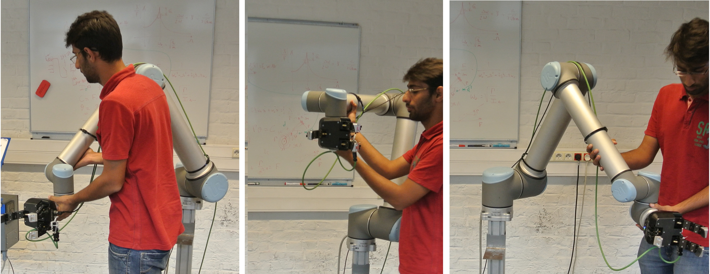
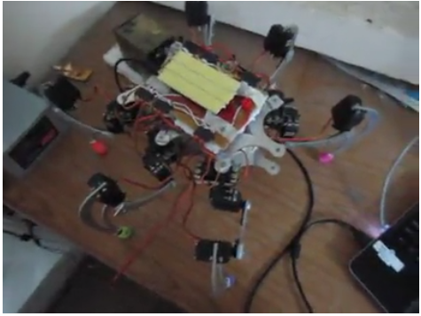

- Motion Planning - Implemented the Silhouette method for Motion Planning in arbitrary dimensions. The approach was to create a road map of semi-free paths in any N dimensional configuration
space containing obstacles, by recursive application of Silhouette method for each lower dimension.
Djisktra’s algorithm is used to calculate the shortest path to the goal configuration. The method
we implemented is complete, i.e, path will be found if any exists.
- Robot Learning - Implemented Programming by Demonstration methods on a Universal Robot UR10. We used non-linear time-invariant Dynamical Systems that can imitate unconventional forms of motion.
Gaussian Mixture Models were used to model input data and parameters of DS were optimized
based on MSE and Log-likelihood cost functions. We incorporated a Kinect to detect users and
ensure safety. Our system learns any non-circular path within three manual demonstrations and
was spatially asymptotically stable.

- Indic Word Wise Script Recognition - Developed a novel method for online and offline script recognition using Recurrent Neural Network. First we trained RNNs using online character level data for 2-5
scripts, and then tested for word level classification. These networks performed on par with word
level classifiers, with one-tenth the training time and requiring much less data.
We extended this approach for offline recognition by developing our method of stroke recovery to
retrieve temporal information. Classification using above networks achieved competitive results. Paper for the same : here
- Action Recognition - Proposed a Video classification method by training RNNs on dense trajectory data points. Video
Data was extracted by sampling dense points from each frame and tracking them using the optical
flow. We tested on the UCF11 dataset.
Used multi-resolution to overcome non availability of GPU training time. We trimmed the data by
reducing each video to two smaller videos; one cropped to central region and other is original video
at a lower resolution. The multi resolution model trained much faster and performance was at par.
- Hexapod and Club Projects - We developed an 18 DOF Hexapod over the summers'12. It was quite a successful robot as well, bagging the second prize at the Robot's got Talent Event at Teckriti'13.
